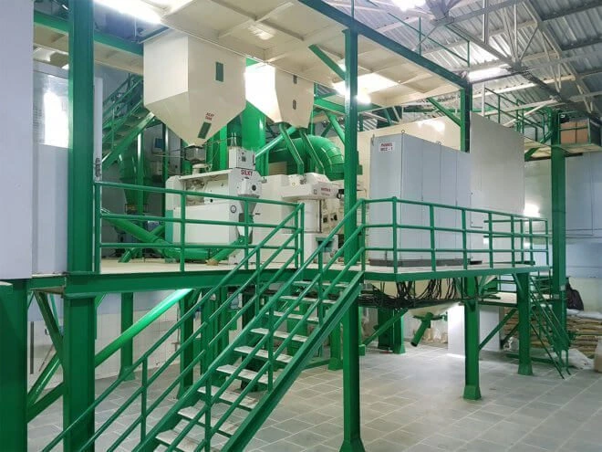

กำลังโหลดโครงสร้างพื้นฐาน...
เครื่องสีข้าวที่ล้ำสมัย ระบบแปรรูปเครื่องเทศอัตโนมัติ และพื้นที่ 50,000 ตารางฟุต คลังสินค้าภายใต้การรับรองมาตรฐาน ISO 22000 จากข้าวเปลือกสู่ภาชนะภายใน 72 ชั่วโมง
Our Technology Partners

โรงงานแปรรูปหลักของเราตั้งอยู่ในใจกลางเขต Raigad รัฐมหาราษฏระ หน่วยอัตโนมัติเต็มรูปแบบนี้เชี่ยวชาญในการแปรรูปข้าวขาว IR64 ข้าวนึ่ง ข้าวสวาร์นา และพันธุ์อื่นๆ เพื่อให้มั่นใจถึงการรักษากลิ่นหอมและความยาวของเมล็ดพืช

ออกแบบมาเพื่อสุขอนามัยที่สมบูรณ์แบบ หน่วยโม่แป้งของเราทำงานบนระบบลำเลียงแบบนิวแมติก 'Zero-Touch' เราผลิตไมด้า (แป้งสิทธิบัตร), ซูจิ (เซโมลินา) และโฮลวีตอัตตาระดับพรีเมียมสำหรับตลาดส่งออก
To ensure consistent supply regardless of crop seasonality, JFT Agro maintains massive buffer stocks in climate-controlled environments.
บรรจุภัณฑ์คือหน้าตาของแบรนด์ของคุณ สายการผลิตบรรจุถุงอัตโนมัติของเรารับประกันน้ำหนักที่แม่นยำ (พิกัดความเผื่อ ±0.1%) และการปิดผนึกที่แข็งแกร่งเพื่อทนต่อการเดินทางในทะเลที่มีความรุนแรง
We can print Your Brand Name in up to 8 colors using Roto-Gravure printing technology.


ประสิทธิภาพของห่วงโซ่อุปทานคือความได้เปรียบในการแข่งขันของเรา ตั้งแต่การบรรจุในโรงงานไปจนถึงท่าปล่อยสินค้าขั้นสุดท้าย เรายังคงควบคุมการเคลื่อนย้ายสินค้าได้อย่างสมบูรณ์
Strategic Connectivity: โกดังตั้งอยู่ใกล้รัฐมหาราษฏระและคุชราตสำหรับการขนส่งทางถนนและรถไฟที่รวดเร็วไปยังท่าเรือ Nhava Sheva, Mundra และ Kandla
We don't rely solely on port inspections. Every lot is tested in-house before packing.
การทดสอบอะฟลาทอกซิน สารกำจัดศัตรูพืชตกค้าง (MRL) และโลหะหนัก
เครื่องวัดความขาว Kett, ความยาวเกรน (เวอร์เนียร์คาลิปเปอร์) และเครื่องวัดความชื้น
การทดสอบการต้มจริงเพื่อตรวจสอบอัตราการยืดตัวและการกักเก็บกลิ่น
ความมุ่งมั่นของเราขยายไปไกลกว่าคุณภาพสู่โลกนี้ JFT Agro ดำเนินธุรกิจในรูปแบบการผลิตที่ยั่งยืนโดยใช้เชื้อเพลิงชีวมวลและพลังงานแสงอาทิตย์เพื่อลดผลกระทบต่อสิ่งแวดล้อม

ตัวอย่างผลิตภัณฑ์ฟรี มีค่าธรรมเนียมจัดส่ง ราคาโรงงานโดยตรง โดยปกติทีมส่งออกของเราจะตอบกลับภายในหนึ่งวันทำการด้วยใบแจ้งหนี้ Proforma
พูดคุยกับฝ่ายซื้อขายของเราโดยตรง — จันทร์–เสาร์ เวลา 9.00 น. ถึง 19.00 น. IST